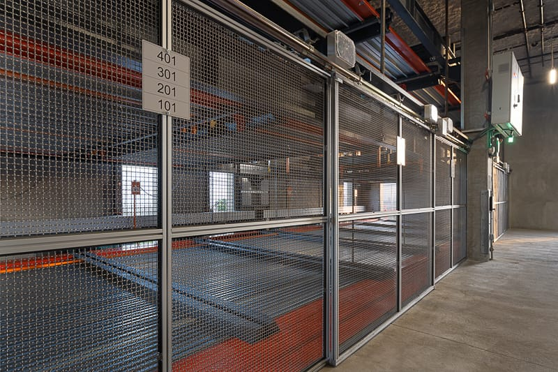
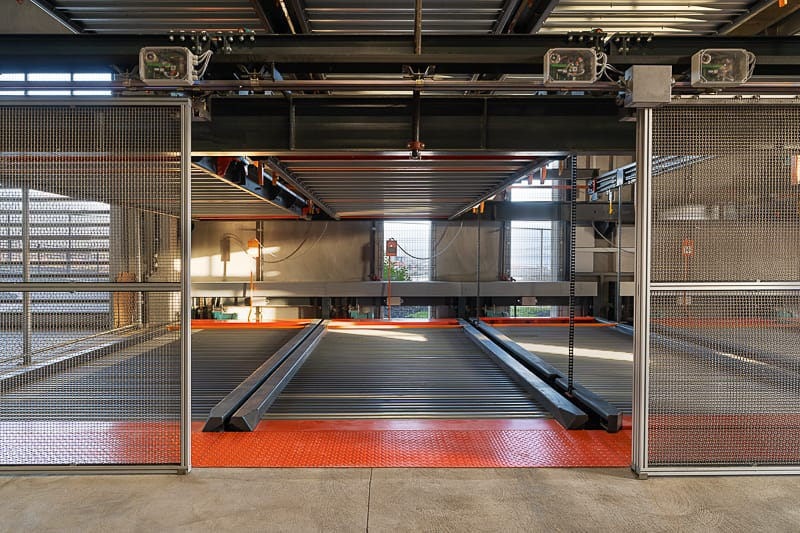
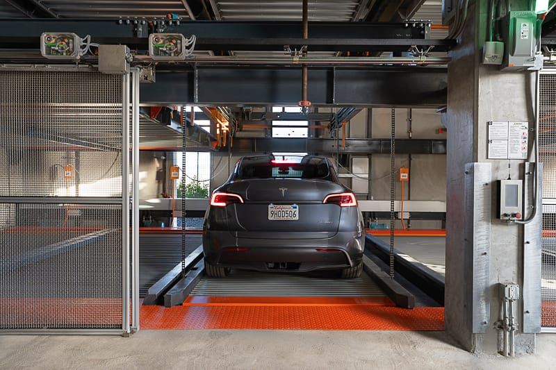
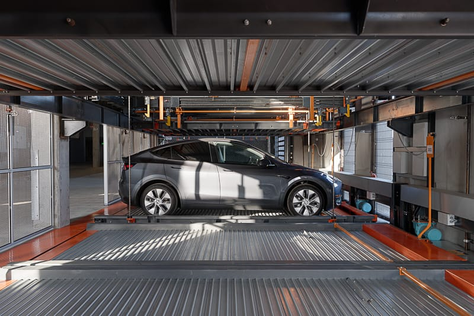
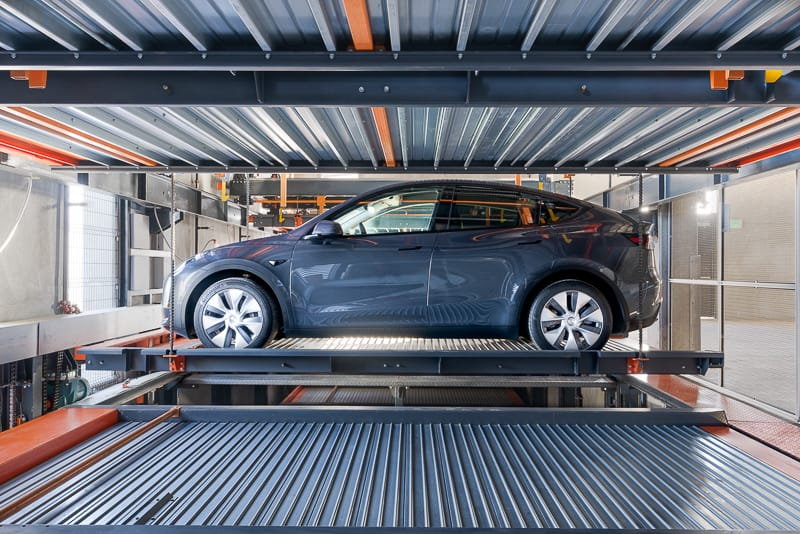
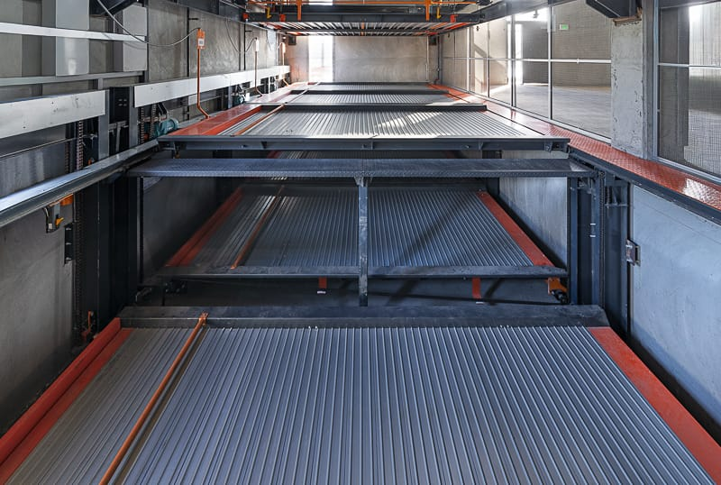
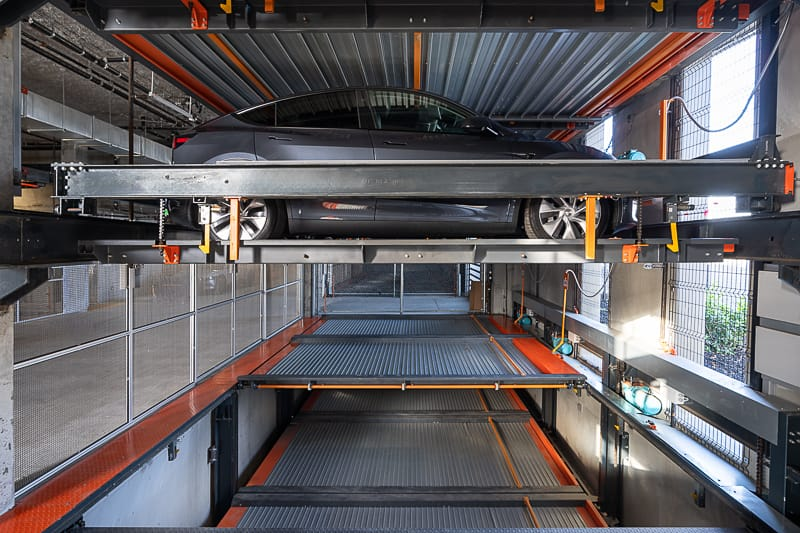
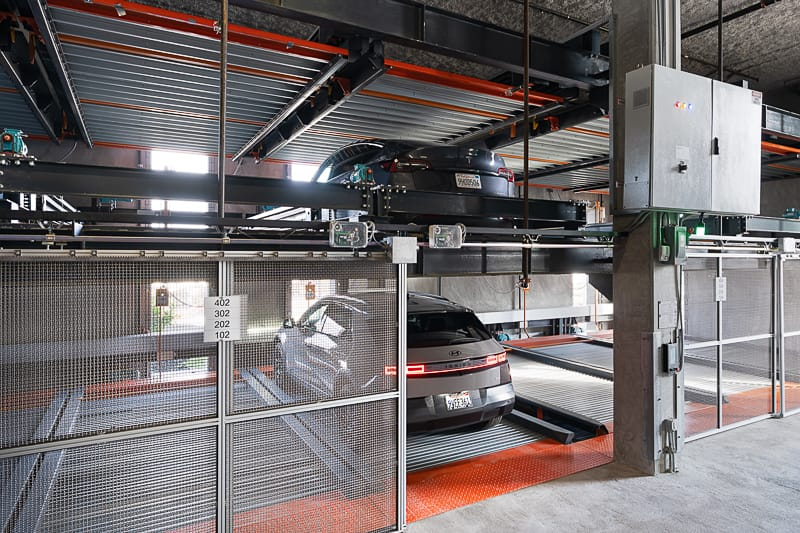
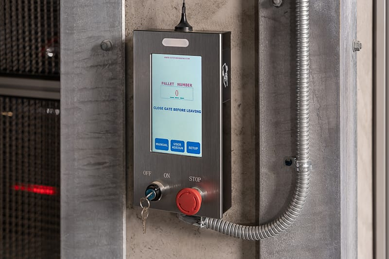

Parkworks Automation - Hunters View
Automated parking systems photography for modern residential development in San Francisco










Project Overview
This project showcases the innovative automated parking systems installed by Parkworks Mechanical Systems at the Hunters View residential development in San Francisco. The objective was to artfully and realistically portray these cutting-edge automated parking systems within modern residential parking garages that are part of new residential building developments in the Bay Area.
Through careful composition and expert lighting, these images capture both the technological sophistication and seamless integration of automated parking solutions in contemporary urban residential architecture.
- Client: Parkworks Mechanical Systems
- Location: Hunters View, San Francisco
- Project Type: Automated Parking Systems
- Building Type: Modern Residential Development
- Photography Focus: Architectural & Systems Documentation
- Coverage: Interior parking garage systems and installations
This comprehensive documentation serves to showcase the advanced engineering and clean integration of automated parking technology in urban residential environments.
Discuss Your Project